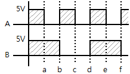
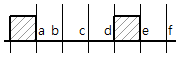
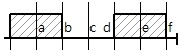
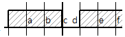
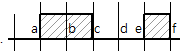
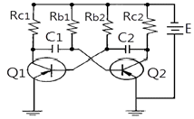
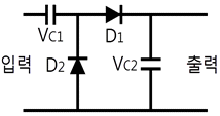
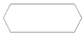
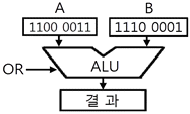
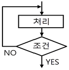

전자기기기능사 (2006-01-22 기출문제)
1과목: 전기전자공학
1. 전기력선의 성질로 틀린 것은?
- 전기력선은 양전하에서 나와 음전하로 끝나는 연속 곡선이다.
- 전기럭선으로 전장의 방향을 가리킨다.
- 전기력선의 밀도는 전장의 세기를 나타낸다.
- 전기력선은 서로 교차한다.
(정답률: 67%)

2. 그림의 파형 A, B가 AND 게이트를 통과했을 때의 출력 파형은?





(정답률: 84%)
3. 그림에서 C2가 방전 중이면 각 TR의 on, off 상태는?

- T1: off, T2: on
- T1, T2 동시 off
- T1: on, T2: off
- T1, T2 동시 on
(정답률: 46%)
4. 콘덴서 입력형 평활회로를 사용한 반파정류기의 입력전압이 실효값으로 100V일 때 정류 다이오드의 첨두 역전압은 약 몇 V인가?
- 100
- 140
- 200
- 280
(정답률: 46%)
5. 저역 차단주파수에서 트랜지스터 증폭기의 상관이득을 db로 표시하면 어떻게 되는가?
- -3db
- -6db
- 8db
- 10db
(정답률: 33%)
6. 위상 변조파의 경우 변조지수에 대한 설명으로 옳은 것은?
- 신호의 진폭에만 관련된다.
- 신호의 주파수에만 관련된다.
- 신호의 주파수와 진폭에 관련된다.
- 신호의 주파수와 진폭 및 위상에 관련된다.
(정답률: 26%)
7. RS-FF에서 R=1, S=1일 때 출력은?
- 리세트
- 세트
- 불확정
- Qn
(정답률: 62%)
8. 두 금속을 접속하고 이 두 접점사이에 서로 다른 열을 가했을 때 전류가 흐르는 현상은?
- 펠티어효과
- 홀효과
- 제에백효과
- 압전기효과
(정답률: 54%)
9. 연산증폭기의 특징으로 옳지 않은 것은?
- 전압 이득이 크다.
- 입력 임피던스가 높다.
- 출력 임피던스가 낮다.
- 단일 주파수만을 통과시킨다.
(정답률: 63%)
10. 쌍안정 멀티바이브레이터를 잘못 설명한 것은?
- 입력펄스가 공급되기 전에는 출력상태가 바뀌지 않는다.
- 입력 트리거펄스 2개마다 2개의 펄스 출력을 낸다.
- 2개의 안정상태를 가진다.
- 플립플롭회로이며 전자계산기에 사용된다.
(정답률: 72%)
11. 100Ω과 400Ω인 저항 2개를 직렬 연결할 때의 합성저항은 몇 Ω인가?
- 80
- 150
- 250
- 500
(정답률: 81%)
12. 그림의 회로에 대한 관계식 중 옳은 것은?

- VC2 = 2VC1
- VC2 = VVC1
- VC2 = (1/2)VC1
- VC2 = (3/2)VC1
(정답률: 39%)
13. 펄스 증폭회로의 설명 중 틀린 것은?
- 결합콘덴서 CC를 크게 하면 새그가 감소한다.
- 저역특성이 양호하면 새그가 감소한다.
- 고역특성이 양호하면 입상의 기울기사 개선된다.
- 고역보상이 지나치면 언더슈트가 생긴다.
(정답률: 54%)
14. 도체에 전기를 주었을 때 전하는 어느 부분에 많이 모여 있는가?
- 도체의 중심에 모인다.
- 도체 내에 균일하게 분포되어 있다.
- 도체의 표면에 균일하게 분포되어 있다.
- 도체 표면의 뾰족한 부분에 많이 분포되어 있다.
(정답률: 59%)
15. 부성저항특성을 나타내지 않은 것은?
- 다이나트론
- PNPN 다이오드
- PN접합 다이오드
- 터널다이오드
(정답률: 43%)
2과목: 전자계산기일반
16. 어떤 정류기의 부하의 양단 평균전압이 3000V이고 맥동률이 1.5%라고 한다. 교류분은 몇 V인가?
- 15
- 30
- 45
- 60
(정답률: 67%)
17. 다음 그림과 같은 순서도 기호가 의미하는 것은?

- 수동조작(manual operation)
- 준비(preparation)
- 합병(merge)
- 처리(process)
(정답률: 60%)
18. 마이크로프로세서에서 누산기의 용도는?
- 명령의 해독
- 명령의 저장
- 연산결과의 일시저장
- 다음명령의 주소저장
(정답률: 82%)
19. 기억장치에 기억된 명령이 순서대로 중앙처리장치에서 실행될 수 있도록 그 주소를 지정해주는 레지스터는?
- 프로그램 카운터(PC)
- 어큐뮬레이터(AC)
- 명령레지스터(IR)
- 스택포인터(SP)
(정답률: 67%)
20. 컴퓨터 내부에서 연산의 중간 결과를 일시적으로 기억하거나 데이터의 내용을 이송할 목적으로 사용되는 임시기억장치는?
- ROM
- I/O
- BUFFER
- REGISTER
(정답률: 59%)
21. 비수치적 연산에서 하나의 레지스터에 기억된 데이터를 다른 레지스터로 옮기는데 사용되는 연산은?
- OR
- AND
- Shift
- Move
(정답률: 78%)
22. 컴퓨터와 오퍼레이터 사이에 필요한 정보를 주고받을 수 있는 장치는?
- 자기디스크
- 라인프린터
- 콘솔
- 데이터셀
(정답률: 62%)
23. 컴퓨터와 기억장치에서 번지가 지정된 내용은 어느 버스를 통해서 중앙처리장치로 가는가?
- 제어버스
- 데이터버스
- 어드레스버스
- 입·출력 포트버스
(정답률: 59%)
24. 순차 액세스(sequential access)만이 가능한 보조기억장치는?
- 자기디스크
- 자기테이프
- 자기드럼
- 플로피디스크
(정답률: 48%)
25. 스택(stack)과 관계없는 것은?
- PUSH
- LIFO
- POP
- 플로피디스크
(정답률: 60%)
26. 다음 그림의 연산 결과를 올바르게 나타낸 것은?

- 1100 0011
- 1110 0001
- 1100 0001
- 1110 0011
(정답률: 69%)
27. 레지스터 내의 필요 없는 부분을 지워 버리고 원하는 비트만을 가지고 처리하기 위하여 사용되는 연산자는?
- AND
- OR
- SHIFT
- ROTATE
(정답률: 66%)
28. 그림과 같은 흐름도(FLOW CHART)는 어떤 형인가?

- 분기형
- 순차 직선형
- 직선형
- 루프형
(정답률: 63%)
29. 증폭기의 출력 파형을 측정한 결과, 기본파 진폭 100V,일그러짐률은 몇 %인가?
- 5%
- 10%
- 15%
- 20%
(정답률: 24%)
30. 일반적으로 지시계기의 구비 조건 중 옳은 것은?
- 확도가 낮고, 외부의 영향을 받지 않아야 한다.
- 눈금이 균등하든가 대수 눈금이어야 한다.
- 절연내력이 낮아야 한다.
- 지시가 측정값의 변화에 불확정 응답이어야 한다.
(정답률: 63%)
3과목: 전자측정
31. 안테나의 실효 저항은 희망주파수에서 공진시킨 상태에서 측정해야 한다. 실효 저항 측정법이 아닌 것은?
- 저항 삽입법
- 작도법(Pauil의 방법)
- coil 삽입법
- 치환법
(정답률: 65%)
32. 캘빈 더블 브리지로 저 저항을 측정할 수 있는 이유는?
- 저 저항과 비교될 수 있으므로
- 표준 저항과 비교될 수 있으므로
- 검류계의 감도가 매우 양호하므로
- 단자의 접촉 저항, 리드선 저항의 영향을 무시할 수 있으므로
(정답률: 46%)
33. 전류에 의한 자기장이 연철편에 작용하는 힘을 이용한 교류전용 지시계기는?
- 가동코일형 계기
- 가동철편형 계기
- 전류력계형 계기
- 열전형 계기
(정답률: 54%)
34. 주파수계 중 초당 반복되는 파를 펄스로 변화하여 주파수를 측정하는 주파수계는?
- 계수형 주파수계
- 캠벨 브리지형 주파수계
- 빈 브리지형 주파수계
- 헤테로다인법 주파수계
(정답률: 46%)
35. 내부 저항이 19㏀, 최대 눈금 15㎃인 전류계로 300㎃의 전류를 측정하고자 할 때 분류기 저항은 몇 ㏀인가?
- 1
- 10
- 19
- 20
(정답률: 26%)
36. 고주파 전력을 측정하는 방법 중 콘덴서를 사용하여 부하전력의 전압 및 전류에 비례하는 양을 구하고, 열전쌍의 제곱 특성을 이용하여 부하 전력에 비례하는 직류 전류를 가동 코일형 계기로 측정하도록 한 전력계는?
- C-C형 전력계
- C-M형 전력계
- 볼로미터 전력계
- 의사 부하법
(정답률: 51%)
37. 전력 증폭기에서 저항을 측정하는 이유로 옳은 것은?
- 전류 이득을 계산하기 위해서
- 전압 이득을 계산하기 위해서
- 부하 저항과의 정합을 이루기 위하여
- 주파수 응답 특성을 알기 위하여
(정답률: 49%)
38. 표준 신호 발생기의 구비 조건이 아닌 것은?
- 출력 레벨이 고정일 것
- 발진 주파수의 확도와 안정도가 양호할 것
- 넓은 범위에 걸쳐서 발진 주파수가 가변일 것
- 변조도가 정확히 조정되고 변조 왜곡이 적을 것
(정답률: 42%)
39. 다음 중 고 정밀도의 측정이 가능하고, 영위법에 의한 측정 원리를 이용한 기록계기는?
- 펜식
- 타점식
- 자려식
- 자동 평형식
(정답률: 66%)
40. 회로시험기로는 측정이 곤란한 것은?
- 직류 전압
- 교류 전압 및 저항
- 직류 전류
- 교류 전압의 주파수
(정답률: 66%)
41. 공중선과 급전선과의 결합부에 정합장치를 붙이는 이유로서 가장 적합한 것은?
- 지향성을 가지게 하기 위하여
- 급전선상에 정재파를 없애기 위하여
- 급전선상에 파동 임피던스를 최대한 크게 하기 위하여
- 급전선상에 정재파를 만들어 전송 효율을 높이기 위하여
(정답률: 36%)
42. 투과 전자 현미경의 기호에 해당하는 것은?
- HTM
- TEM
- SEM
- REM
(정답률: 42%)
43. 오디오의 재생 주파수대역을 몇 개의 대역으로 나누어 각 가가의 대역내의 주파수특성을 자유자재로 바꿀 수 있는 기능은?
- 믹싱 앰프
- 채널 디바이더
- 그래픽 이퀄라이저
- 라우드니스 컨트롤
(정답률: 58%)
44. 신호변환 검출에서 다이어프램(diaphragm)조절기는 무엇을 변위시키는가?
- 전압
- 전류
- 압력
- 온도
(정답률: 52%)
45. 전자 냉동은 다음 중 어떤 효과를 이용하는가?
- 광전 효과
- 홀 효과
- 펠티에 효과
- 광전자 방출효과
(정답률: 81%)
4과목: 전자기기 및 음향영상기기
46. 유전가열의 공업제품에 대한 응용에 해당하지 않는 것은?
- 합성수지의 예열 및 성형가공
- 합성수지의 접착
- 목재의 접착
- 목재의 세척
(정답률: 64%)
47. Wow-Flutter Meter는 다음 중 어떤 기기를 실험할 때 사용하는가?
- 튜우너
- 테이프리코더
- 전력 증폭기
- 안테나
(정답률: 32%)
48. 레이더의 초단파 발진관으로 사용되는 것은?
- 자전관
- TR관
- ATR관
- 전자호온
(정답률: 45%)
49. 목표값이 변화하기는 하나 그 변화가 알려진 값이며. 미리 마련된 순서에 따라 변화할 경우의 자동제어는?
- 서보제어
- 정치 제어
- 추치제어
- 프로그램 제어
(정답률: 48%)
50. 합성동기 신호에서 수평동기 신호를 분리하는 회로는?
- 미분 회로
- 적분 회로
- 캐소우드플로어 회로
- 디엠파시스 회로
(정답률: 42%)
51. VTR의 wood화면에 하나 또는 다수의 흰 수평선이 나타나는 드롭아웃 현상은 무엇 때문에 생기는가?
- 수평 동기가 정확히 잡히지 않기 때문에
- 여상 신호에 강한 잡음 신호가 혼입되기 때문에
- 전원전압이 순간적으로 불안정하기 때문에
- 테이프와 헤드 사이에 먼지 등이 끼기 때문에
(정답률: 70%)
52. 다음은 초음파의 발생 소자이다. 전기왜형 진동자로 사용되는 소자는 어느 것인가?
- 페라이트
- 수정
- 티탄산 바륨
- 롯셀염
(정답률: 44%)
53. 8자형 안테나와 수직안테나의 합성출력을 수신기로 받아서 지향성 안테나를 회전시키면서 방향을 자동적으로 탐지하는 기기는?
- LORAN
- ADF
- PAR
- GCA
(정답률: 34%)
54. 녹음기 회로에서 자기 테이프에 기록된 내용을 소거하는 방법 중 거리가 먼 것은?
- 교류 소거법
- 영구자석에 의한 소거법
- 전자석에 의한 소거법
- 전압 소거법
(정답률: 44%)
55. 변위-임피던스 변환기에 해당되지 않는 것은?
- 스프링
- 슬라이드 저항
- 용량성 변환기
- 유도형 변환기
(정답률: 59%)
56. 전자냉동기의 효율은?
- 흡열량/발열량
- 발열량/흡열량
- 흡열량/소비전력
- 발열량/소비전력
(정답률: 51%)
57. 수신기의 성능에서 종합특성이 아닌 것은?
- 감도
- 충실도
- 선택도
- 증폭도
(정답률: 54%)
58. VTR의 조작기능 중 재생 시에만 사용 가능한 것은?
- 트래킹
- 카운트 메모리
- 포우즈
- 자동주파수 조정
(정답률: 40%)
59. 컬러텔레비전 수상기회로의 구성에서 튜너, 자동이득조절기는 어느 계통회로에 구성되어 있는가?
- 영상수신계회로
- 영상회로
- 동기 및 편향회로
- 음성회로
(정답률: 39%)
60. 일반적으로 무선 수신기에서 자기발진의 원인은?
- 검파작용
- 궤환작용
- 정류작용
- 변조작용
(정답률: 40%)